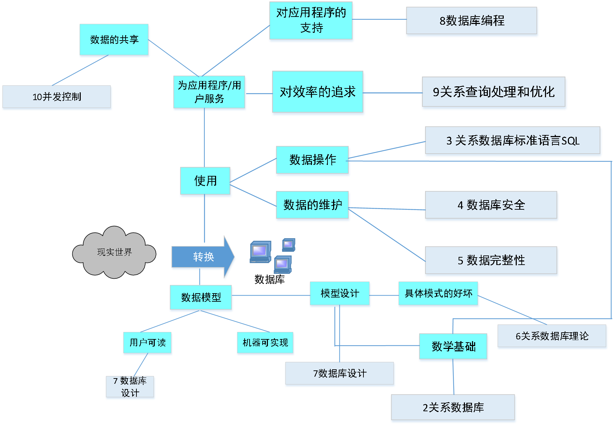
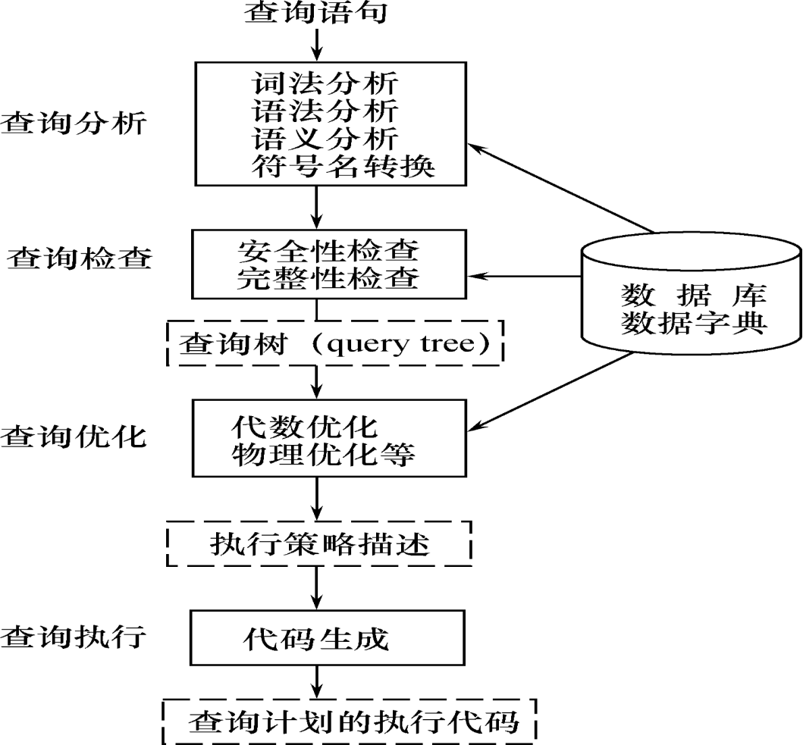
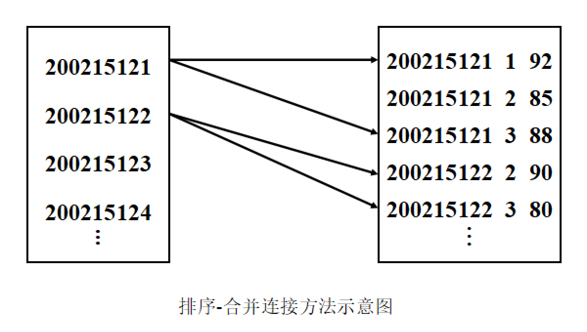
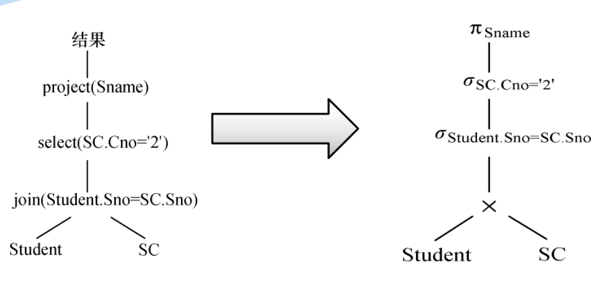
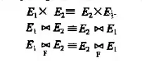
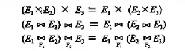
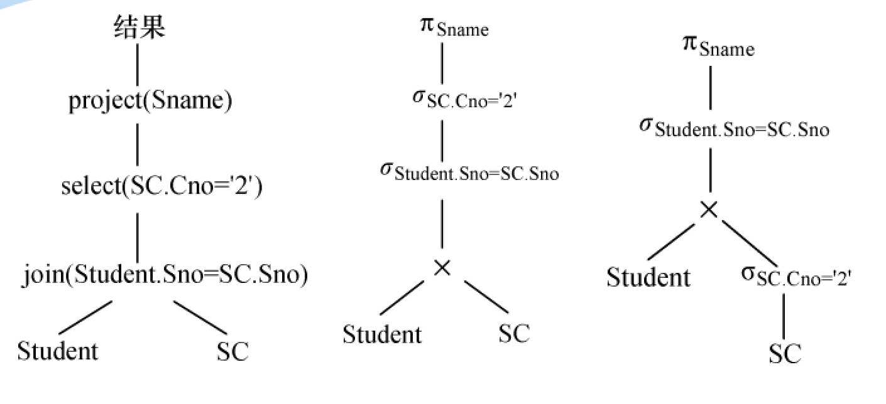
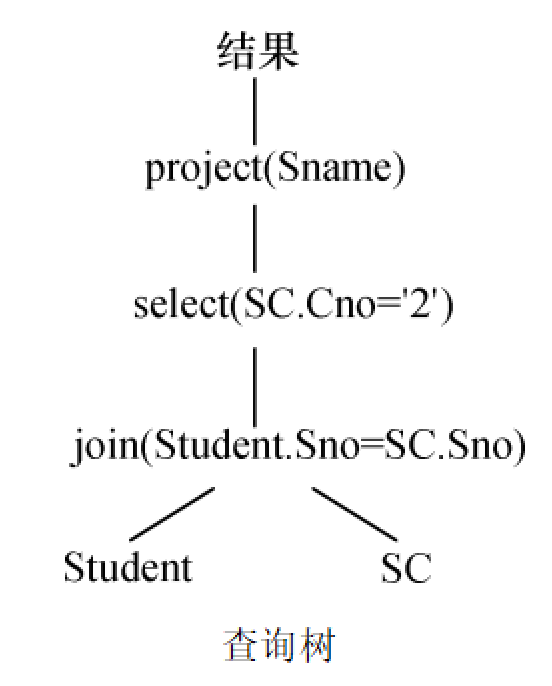
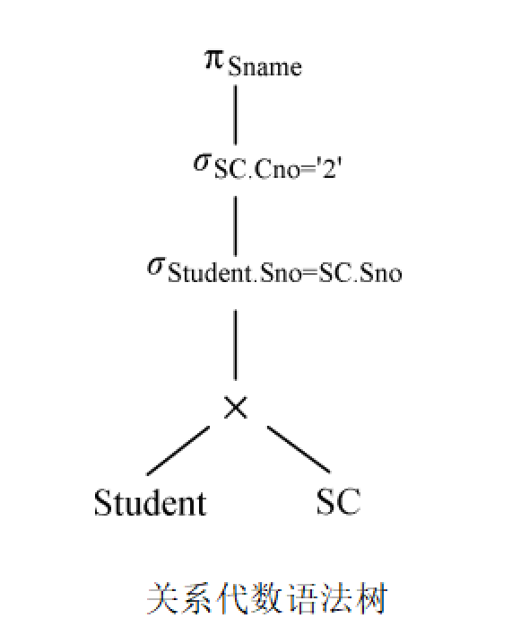
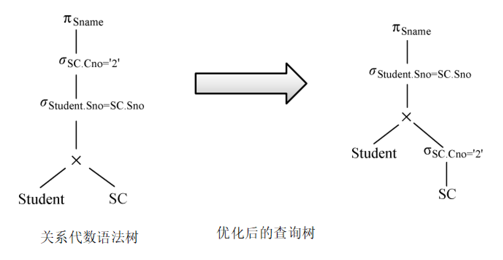

数据库第9章：关系查询处理和查询优化

本章介绍数据库的查询处理和查询优化，查询优化一般可分为代数优化（逻辑优化）和物理优化。
1 关系数据库系统的查询处理
1.1 查询处理步骤

RDBMS查询处理阶段 ：
- 查询分析
- 查询检查
- 查询优化
- 查询执行
1.1.1 查询分析
对查询语句进行扫描、词法分析和语法分析，从查询语句中识别出语言符号，如SQL关键字、属性名和关系名等。
进行语法检查和语法分析，如果没有语法错误就转入下步处理，否则报告语句中出现的错误。
1.1.2 查询检查
根据数据字典对合法的查询语句进行语义检查，根据数据字典中的用户权限和完整性约束定义对用户的存取权限进行检查。
还要根据数据字典中的用户权限和完整性约束定义对用户的存取权限进行检查，这时的完整性检查是初步的、静态的检查。
检查通过后把SQL查询语句转换成等价的关系代数表达式。RDBMS一般都用查询树（语法分析树）来表示扩展的关系代数表达式，把数据库对象的外部名称转换为内部表示。
1.1.3 查询优化
选择一个高效执行的查询处理策略，查询优化分类 ：
- 代数优化：指关系代数表达式的优化
- 物理优化：指存取路径和底层操作算法的选择
查询优化方法选择的依据：
- 基于规则(rule based)
- 基于代价(cost based)
- 基于语义(semantic based)
1.1.4 查询执行
依据优化器得到的执行策略生成查询计划，代码生成器(code generator)生成执行查询计划的代码。
1.2 实现查询操作的算法示例
1.2.1 选择操作的实现
选择操作典型实现方法：
- 简单的全表扫描方法
- 对查询的基本表顺序扫描，逐一检查每个元组是否满足选择条件，把满足条件的元组作为结果输出
- 适合小表，不适合大表
- 索引（或散列）扫描方法
- 适合选择条件中的属性上有索引（例如B+树索引或Hash索引）
- 通过索引先找到满足条件的元组主码或元组指针，再通过元组指针直接在查询的基本表中找到元组
当选择率较低时，基于索引的选择算法要优于全表扫描算法，当选择率较高时，或者要查找的元组均匀分布在查找的表中，此时基于索引的选择算法的性能不如全表扫描算法。
1.2.2 连接操作的实现
连接操作是查询处理中最耗时的操作之一，本节只讨论等值连接(或自然连接)最常用的实现算法。
1.2.2.1 嵌套循环方法(nested loop)
- 对外层循环(Student)的每一个元组(s)，检索内层循环(SC)中的每一个元组(sc)
- 检查这两个元组在连接属性(sno)上是否相等
- 如果满足连接条件，则串接后作为结果输出，直到外层循环表中的元组处理完为止
1.2.2.2 排序-合并方法(sort-merge join 或merge join)
- 适合连接的诸表已经排好序的情况
排序－合并连接方法的步骤：
- 如果连接的表没有排好序，先对Student表和SC表按连接属性Sno排序
- 取Student表中第一个Sno，依次扫描SC表中具有相同Sno的元组
- 当扫描到Sno不相同的第一个SC元组时，返回Student表扫描它的下一个元组，再扫描SC表中具有相同Sno的元组，把它们连接起来
- 重复上述步骤直到Student 表扫描完

这样Student表和SC表都只要扫描一遍即可。当然，如果两个表原来无序，执行时间要加上对两个表的排序时间。
一般来说，对于2个大表，先排序后使用sort-merge join方法执行连接，总的时间一般仍会大大减少。
1.2.2.3 索引连接(index join)方法
- 在SC表上建立属性Sno的索引，如果原来没有该索引
- 对Student中每一个元组，由Sno值通过SC的索引查找相应的SC元组
- 把这些SC元组和Student元组连接起来
循环执行②③，直到Student表中的元组处理完为止。
1.2.2.4 Hash Join方法
把连接属性作为hash码，用同一个hash函数把R和S中的元组散列到同一个hash文件中
步骤：
- 划分阶段(partitioning phase)：
- 对包含较少元组的表(比如R)进行一遍处理
- 把它的元组按hash函数分散到hash表的桶中
- 试探阶段(probing phase)，也称为连接阶段(join phase)：
- 对另一个表(S)进行一遍处理
- 把S的元组散列到适当的hash桶中
- 把元组与桶中所有来自R并与之相匹配的元组连接起来
上面hash join算法前提：假设两个表中较小的表在第一阶段后可以完全放入内存的hash桶中，以上的算法思想可以推广到更加一般的多个表的连接算法上。
2 关系数据库系统的查询优化
查询优化在关系数据库系统中有着非常重要的地位，关系查询优化是影响RDBMS性能的关键因素，由于关系表达式的语义级别很高，使关系系统可以从关系表达式中分析查询语义，提供了执行查询优化的可能性。
2.1 查询优化概述
查询优化的优点不仅在于用户不必考虑如何最好地表达查询以获得较高的效率，而且在于系统可以比用户程序的“优化”做得更好。这是因为：
- 优化器可以从数据字典中获取许多统计信息，而用户程序则难以获得这些信息
- 如果数据库的物理统计信息改变了，系统可以自动对查询重新优化以选择相适应的执行计划。在非关系系统中必须重写程序，而重写程序在实际应用中往往是不太可能的。
- 优化器可以考虑数百种不同的执行计划，程序员一般只能考虑有限的几种可能性
- 优化器中包括了很多复杂的优化技术，这些优化技术往往只有最好的程序员才能掌握。系统的自动优化相当于使得所有人都拥有这些优化技术
RDBMS通过某种代价模型计算出各种查询执行策略的执行代价，然后选取代价最小的执行方案
在集中式数据库中，查询开销主要包括：
- 磁盘存取块数(I/O代价)，I/O代价是最主要的
- 处理机时间(CPU代价)
- 查询的内存开销
分布式数据库中：
- 总代价 = I/O代价+CPU代价+内存代价＋通信代价
查询优化的总目标：
- 选择有效的策略
- 求得给定关系表达式的值
- 使得查询代价最小(实际上是较小)
2.2 一个实例
求选修了2号课程的学生姓名。用SQL表达：
1 | SELECT Student.Sname FROM Student，SC |
假定学生-课程数据库中有1000个学生记录，10000个选课记录，其中选修2号课程的选课记录为50个。系统可以用多种等价的关系代数表达式来完成这一查询：
- Q1是先求两个表的笛卡尔积，然后再进行条件筛选
- Q2先对两个表进行等值连接，再选择
- Q3先对表进行筛选，再进行连接
2.2.1 第一种情况
2.2.1.1 计算笛卡尔积
计算广义笛卡尔积，把Student和SC的每个元组连接起来的做法：
- 在内存中尽可能多地装入某个表(如Student表)的若干块，留出一块存放另一个表(如SC表)的元组
- 把SC中的每个元组和Student中每个元组连接，连接后的元组装满一块后就写到中间文件上
- 从SC中读入一块和内存中的Student元组连接，直到SC表处理完
- 再读入若干块Student元组，读入一块SC元组
- 重复上述处理过程，直到把Student表处理完
设一个块能装10个Student元组或100个SC元组，在内存中存放5块Student元组和1块SC元组，则读取总块数为：
其中，读Student表100块。读SC表20遍，每遍100块。若每秒读写20块，则总计要花105 s。
连接后的元组数为 。设每块能装10个元组，则写出这些块要用。
2.2.1.2 做选择操作
依次读入连接后的元组，按照选择条件选取满足要求的记录，假定内存处理时间忽略。读取中间文件花费的时间(同写中间文件一样)需，满足条件的元组假设仅50个，均可放在内存。
2.2.1.3 作投影操作
把第2步的结果在Sname上作投影输出，得到最终结果，第一种情况下执行查询的总时间，所有内存处理时间均忽略不计。
2.2.2 第二种情况
- 计算自然连接
- 执行自然连接，读取Student和SC表的策略不变，总的读取块数仍为2100块花费105 s
- 自然连接的结果比第一种情况大大减少，为个
- 写出这些元组时间为，为第一种情况的千分之一
- 读取中间文件块，执行选择运算，花费时间也为50s
- 把第2步结果投影输出
第二种情况总的执行时间≈105+50+50 ≈ 205 s。
2.2.3 第三种情况
- 先对SC表作选择运算，只需读一遍SC表，存取100块花费时间为5s，因为满足条件的元组仅50个，不必使用中间文件。
- 读取Student表，把读入的Student元组和内存中的SC元组作连接。也只需读一遍Student表共100块，花费时间为5s。
- 把连接结果投影输出
第三种情况总的执行时间≈5+5≈10 s。
假如SC表的Cno字段上有索引
- 第一步就不必读取所有的SC元组而只需读取Cno=‘2’的那些元组(50个)
- 存取的索引块和SC中满足条件的数据块大约总共3～4块
若Student表在Sno上也有索引
- 第二步也不必读取所有的Student元组
- 因为满足条件的SC记录仅50个，涉及最多50个Student记录
总的存取时间将进一步减少到数秒。
这个简单的例子充分说明了查询优化的必要性，同时也给出一些查询优化方法的初步概念。
把代数表达式Q1变换为Q2、 Q3，即有选择和连接操作时，先做选择操作，这样参加连接的元组就可以大大减少，这是代数优化。
在Q3中，SC表的选择操作算法有全表扫描和索引扫描2种方法，经过初步估算，索引扫描方法较优。对于Student和SC表的连接，利用Student表上的索引，采用index join代价也较小，这就是物理优化。
3 代数优化
3.1 关系代数表达式等价变换规则

代数优化策略：通过对关系代数表达式的等价变换来提高查询效率。
关系代数表达式的等价：指用相同的关系代替两个表达式中相应的关系所得到的结果是相同的，两个关系表达式E1和E2是等价的，可记为E1≡E2。
3.1.1 连接、笛卡尔积交换律
设E1和E2是关系代数表达式，F是连接运算的条件，则有：

3.1.2 连接、笛卡尔积的结合律
设E1，E2，E3是关系代数表达式，F1和F2是连接运算的条件，则有：

3.1.3 投影的串接定律
投影两次等于投影一次的效果
这里，E是关系代数表达式，Ai(i=1，2，…，n)，Bj(j=1，2，…，m)是属性名且{A1，A2，…，An}构成{B1，B2，…，Bm}的子集。
3.1.4 选择的串接定律
选择两次等于选择一次的效果
这里，E是关系代数表达式，F1，F2是选择条件，选择的串接定律说明选择条件可以合并。这样一次就可检查全部条件。
3.1.5 选择与投影操作的交换律
选择条件F只涉及属性A1，…，An。
若F中有不属于A1，…，An的属性B1，…，Bm则有更一般的规则：
3.1.6 选择与笛卡尔积的交换律
如果F中涉及的属性都是E1中的属性，则
如果F=F1∧F2，并且F1只涉及E1中的属性，F2只涉及E2中的属性，则由上面的等价变换规则1，4，6可推出：
若F1只涉及E1中的属性，F2涉及E1和E2两者的属性，则仍有：
它使部分选择在笛卡尔积前先做。
3.2 查询树的启发式优化

典型的启发式规则：
- 选择运算应尽可能先做。在优化策略中这是最重要、最基本的一条
- 把投影运算和选择运算同时进行，如有若干投影和选择运算，并且它们都对同一个关系操作，则可以在扫描此关系的同时完成所有的这些运算以避免重复扫描关系
- 把投影同其前或其后的双目运算结合起来，没有必要为了去掉某些字段而扫描一遍关系
- 把某些选择同在它前面要执行的笛卡尔积结合起来成为一个连接运算，连接（特别是等值连接）运算要比同样关系上的笛卡尔积节省很多时间
- 找出公共子表达式
- 如果这种重复出现的子表达式的结果不是很大的关系并且从外存中读入这个关系比计算该子表达式的时间少得多，则先计算一次公共子表达式并把结果写入中间文件是合算的
- 当查询的是视图时，定义视图的表达式就是公共子表达式的情况
下面给出上例中 SQL语句的代数优化示例。
1 | SELECT Student.Sname FROM Student，SC |
(1) 把SQL语句转换成查询树，如下图所示：

为了使用关系代数表达式的优化法，假设内部表示是关系代数语法树，则上面的查询树如下图所示。

(2) 对查询树进行优化
利用规则4、6把选择σ SC.Cno=‘2’移到叶端，查询树便转换成下图所示的优化的查询树。这就是9.2.2节中Q3的查询树表示。

4 物理优化
代数优化改变查询语句中操作的次序和组合，不涉及底层的存取路径，对每一种操作有多种执行这个操作的算法，有多条存取路径，因此对于一个查询语句有许多存取方案，它们的执行效率不同， 仅仅进行代数优化是不够的。
物理优化就是要选择高效合理的操作算法或存取路径，求得优化的查询计划。选择的方法：
- 基于规则的启发式优化
- 基于代价估算的优化
- 两者结合的优化方法
4.1 基于启发式规则的存取路径选择优化
4.1.1 选择操作的启发式规则
对于小关系，使用全表顺序扫描，即使选择列上有索引。
对于大关系，启发式规则有：
- 对于选择条件是主码＝值的查询，查询结果最多是一个元组，可以选择主码索引，一般的RDBMS会自动建立主码索引。
- 对于选择条件是非主属性＝值的查询，并且选择列上有索引，要估算查询结果的元组数
- 如果比例较小(<10%)可以使用索引扫描方法
- 否则还是使用全表顺序扫描
- 对于选择条件是属性上的非等值查询或者范围查询，并且选择列上有索引，要估算查询结果的元组数目
- 如果比例较小(<10%)可以使用索引扫描方法
- 否则还是使用全表顺序扫描
- 对于用AND连接的合取选择条件
- 如果有涉及这些属性的组合索引
- 如果某些属性上有一般的索引，则可以用［例9.1-C4］中介绍的索引扫描方法，否则使用全表顺序扫描。
- 对于用OR连接的析取选择条件，一般使用全表顺序扫描
4.1.2 连接操作的启发式规则
- 如果2个表都已经按照连接属性排序：选用排序-合并方法
- 如果一个表在连接属性上有索引：选用索引连接方法
- 如果上面2个规则都不适用，其中一个表较小：选用Hash join方法
- 可以选用嵌套循环方法，并选择其中较小的表，确切地讲是占用的块数(b)较少的表，作为外表(外循环的表) 。
4.2 基于代价的优化
启发式规则优化是定性的选择，适合解释执行的系统，因为解释执行的系统，其优化开销包含在查询总开销之中。在编译执行的系统中，一次编译优化，多次执行，查询优化和查询执行是分开的。因此可以采用精细复杂一些的基于代价的优化方法。
4.2.1 统计信息
基于代价的优化方法要计算各种操作算法的执行代价，与数据库的状态密切相关。为此，在数据字典中存储了优化器需要的统计信息，主要包括以下内容：
- 对每个基本表
- 该表的元组总数(N)
- 元组长度(l)
- 占用的块数(B)
- 占用的溢出块数(BO)
- 对基表的每个列
- 该列不同值的个数(m)
- 选择率(f)
- 如果不同值的分布是均匀的，f＝1/m
- 如果不同值的分布不均匀，则每个值的选择率＝具有该值的元组数/N
- 该列最大值
- 该列最小值
- 该列上是否已经建立了索引
- 索引类型(B+树索引、Hash索引、聚集索引)
- 对索引(如B+树索引)
- 索引的层数(L)
- 不同索引值的个数
- 索引的选择基数S(有S个元组具有某个索引值)
- 索引的叶结点数(Y)
4.2.2 代价估算示例
4.2.2.1 全表扫描算法的代价估算公式
如果基本表大小为B块，全表扫描算法的代价 cost＝B
如果选择条件是码＝值，那么平均搜索代价 cost＝B/2
4.2.2.2 索引扫描算法的代价估算公式
 微信
微信 支付宝
支付宝